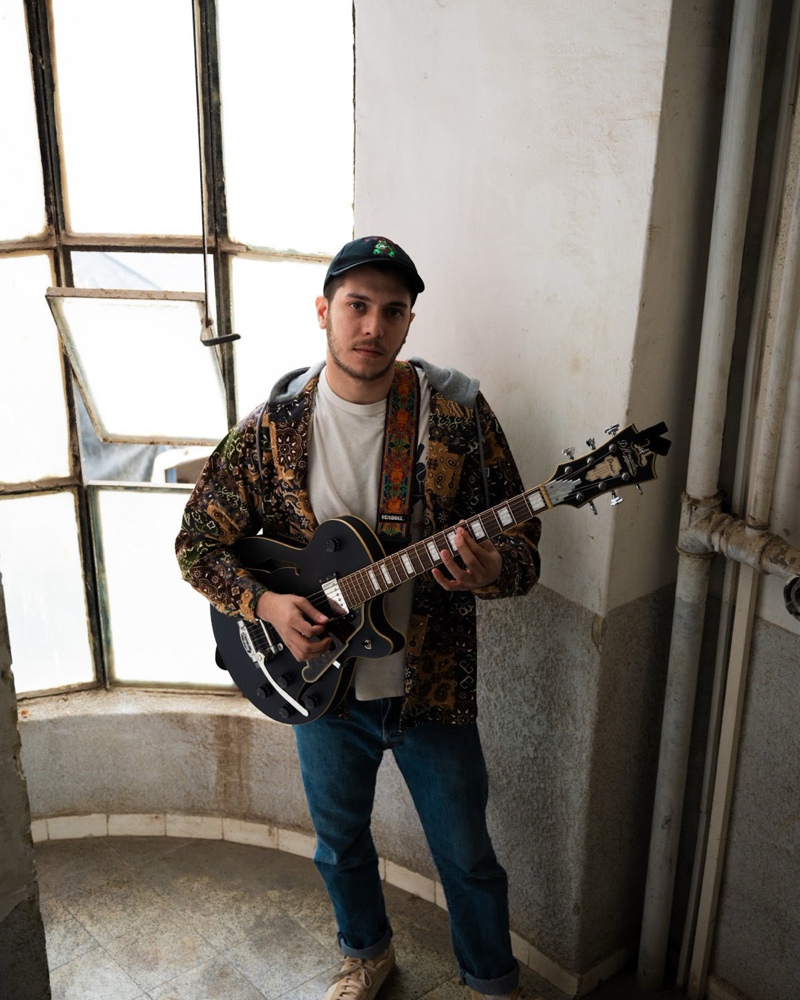

Jazz Guitarist, Composer & Producer — Tel Aviv, Israel
Booking & press: shlomovyoav@gmail.com
yoavshlomov.com ·
Spotify ·
Instagram @yoavhakohav ·
YouTube
Yoav Shlomov is a jazz guitarist, composer and producer from Tel Aviv. His playing moves easily between straight-ahead swing, modern harmony and groove — a genre-less approach that stays recognizably his own whether he's leading a trio or scoring to picture.
He has played from Smalls and FatCat in New York to the Red Sea Jazz Festival, Beit Haamudim and Jazz Kissa in Tel Aviv, and shared stages with Billy Harper, Reggie Workman, Larry Goldings, Omer Avital and Stacy Dillard. His work as a sideman and collaborator spans James Francies, Shlomo Gronich, Eli Magen, Tom Oren, Adi Rennert, Yonatan Daskal, Ofri Nehemya and Tomer Bar, with airplay on 88fm, Galatz, KZ Radio and Kan 11.
Away from the bandstand, Yoav composes and produces original scores for film and picture, with a released catalog on sync and streaming platforms — including 3/4 and Like Sonny (2025) and Hell Nah, Tired and i cAn feel u NoW (2024).
"Outstanding musician with great qualities of music perception, music knowledge, music technique and extended capabilities!" — Billy Harper
"It was indeed a pleasure to work with a guitarist as dedicated and hard-working as Yoav." — Reggie Workman
Billy Harper, Reggie Workman, James Francies, Larry Goldings, Omer Avital, Stacy Dillard, Shlomo Gronich, Eli Magen, Tom Oren, Adi Rennert, Yonatan Daskal, Jenny Penkin, Ofri Nehemya, Tomer Bar.
88fm, Galatz, KZ Radio, Kan 11.
Trio / quartet and solo formats available. Stage plot and technical rider supplied on confirmation.
High-res, print-ready (300dpi) photos available on request — shlomovyoav@gmail.com · yoavshlomov.com
{kind=link}
{kind=link}